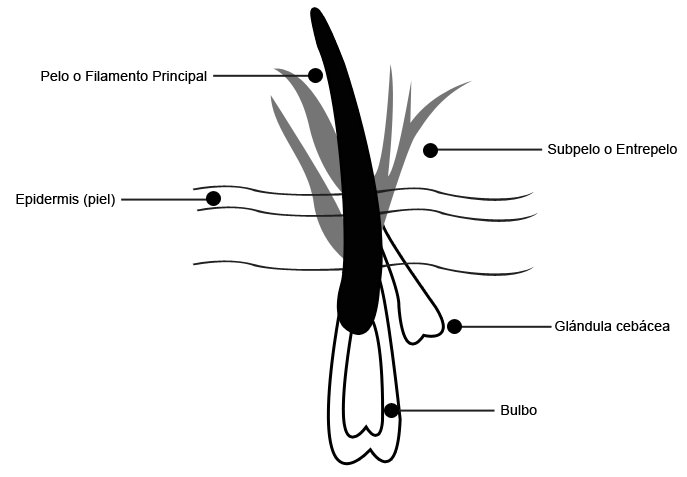

El manto del perro recubre todo el cuerpo otorgándole protección y aislamiento, este mismo está constituido por distintos tipos de pelos y cada uno de ellos cumple una determinada función. El pelo es un filamento córneo que se aloja en el folículo. Son anexos vivos que nacen, crecen, maduran y normalmente se desprenden. En algunos mantos, en los folículos aparece un pelo principal acompañado de uno o más pelos pequeños. La cantidad de lana que posea un manto, será la característica del mismo. Las razas con mayor cantidad de lana son las que por su utilidad necesitaban aislarse del frío y humedad.
En las razas con doble capa de pelo, podemos apreciar el ciclo de crecimiento que atraviesa tres etapas: nacimiento y crecimiento; estacamiento; cuando muere el pelo, cae o se extrae. Encontramos el pelo duro y fuerte, de forma linea o mederadamente torcido. Los mantos formados por este pelo sufren mudas periódicas. En otras razas podemos apreciar otra proporción de lana por pelo principal. Este tipo de pelo lo podemos encontrar en razas como el Caniche, Bichón, Maltés, y otras. El pelo de estas razas, y muchas otras, es mas blando y fino similar a la lana, largo o semi largo, tiene un crecimiento continuo razón por la cual no se afectado por los cambios de estación. La lanilla o lana, de textura suave y más corta que el pelo principal, tiene la característica de rodear al filamento principal naciendo en mechones de un único folículo. Puede destacar su importancia como amortiguador térmico y aislante en razas de trabajo al aire libre.
Es importante tener en cuenta que al observar el manto de en animales de la misma raza se deben tomar como parámetro de comparación todos los factores que inciden en él: la alimentació, la edad, el ambiente en el que vive, los cuidados que recibre y la genética.